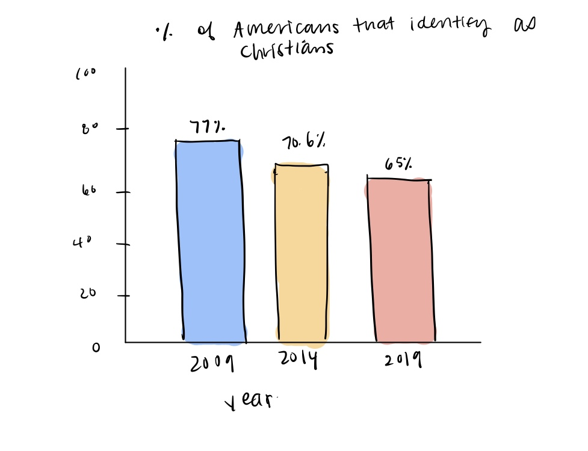
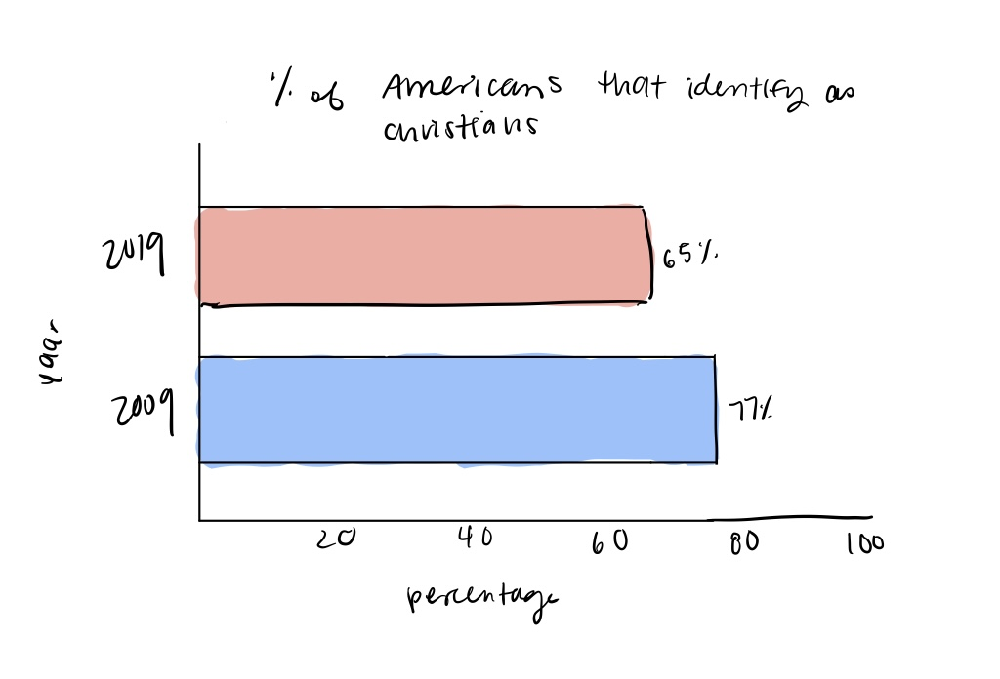
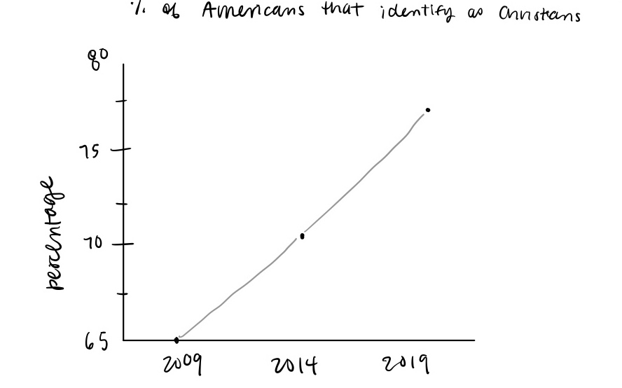
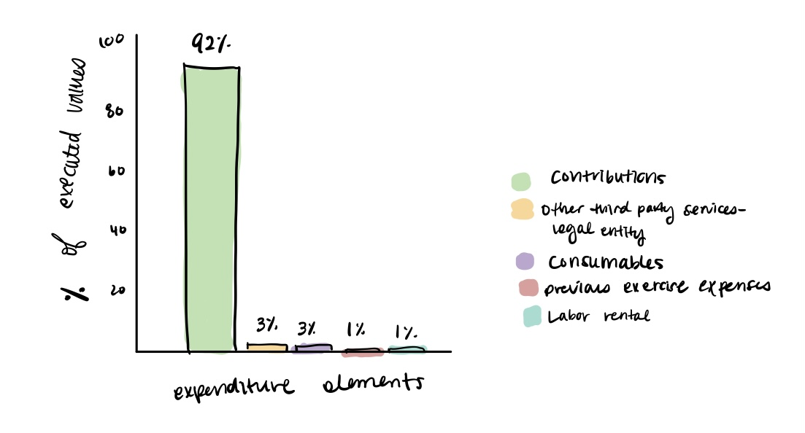
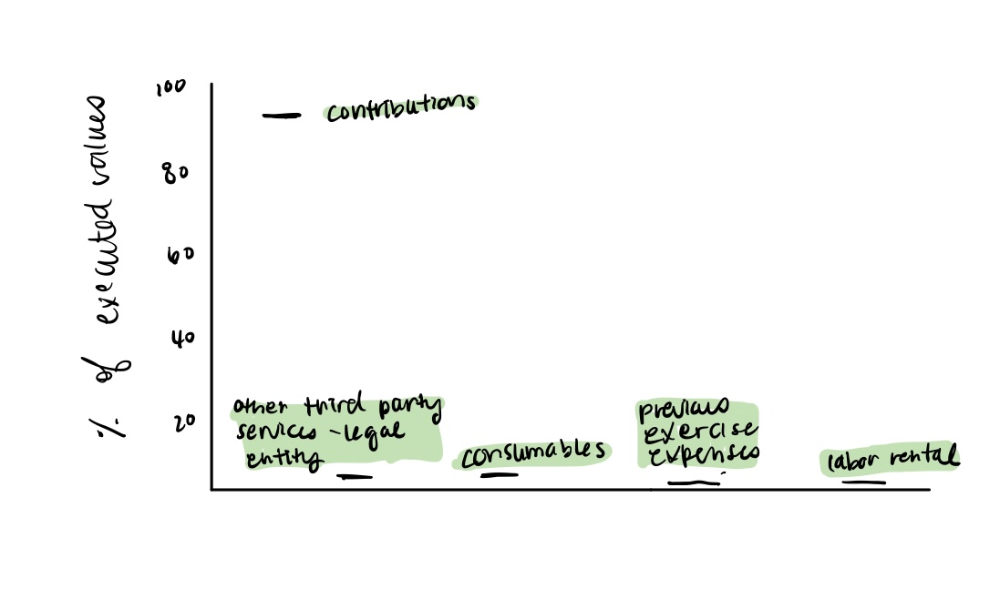
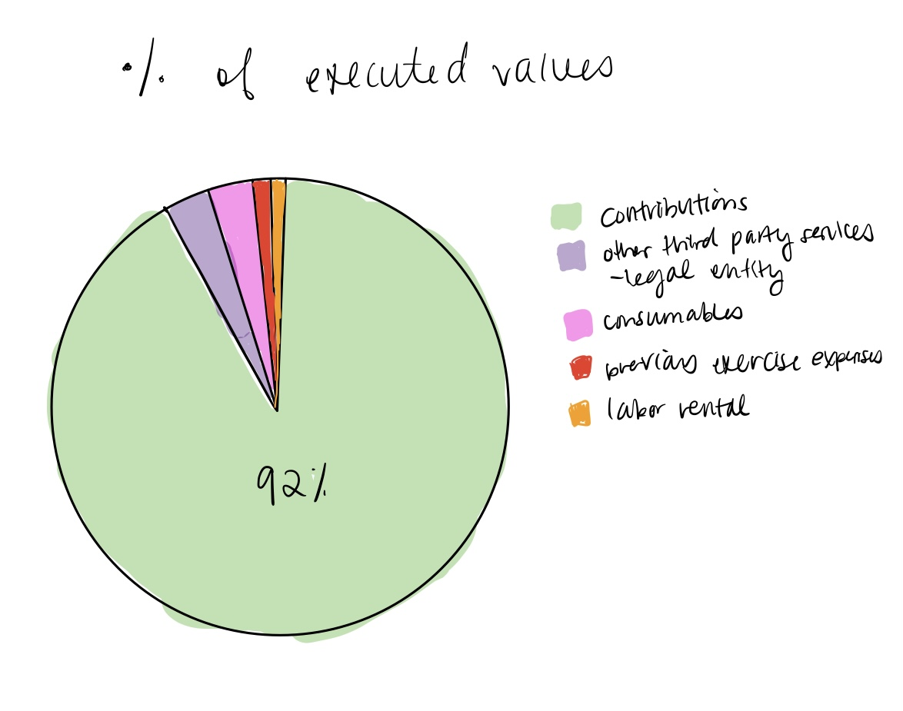

Timeline of the Far Future
Who is the audience?
The audience of the visualization is anyone interested in learning about the possibilities of events that can happen in the future relating to the earth, our humanity, or the heavens (i.e. the universe).
What message and questions does this visualization convey and answer?
The number one question that the visualization answers is “what will happen in the future?” Other questions that the visualization addresses are centered around common inquiries that arise are related to our universe. How long until the Sun turns into a black dwarf? How long before the Earth is destroyed? When will humans go extinct? Although the data points are mere predictions of what can happen moving forward, they are based on scientific data by NASA.
What data is encoded in the visualization?
The data that is encoded in the visualization is “number of years in the future” and “name/description of events that will occur.”
How does the visualization encode the data?
The visualization encodes the data through the use of a snake-like timeline. There are three colors that categorize the types of events. They are separated in three categories: events relating to earth, humanity, and the heavens (i.e. universe). Each one of the events also has a size channel that indicates the magnitude of the event.
What tasks readers perform on the visualization?
The readers of this visualization are able to quickly identify the timeline of the universe. They are able to form patterns of how the universe is actively changing based on when specific events occur. They are also able to compare and contrast different events and see how some events trigger other events. Further, they can contextualize the different events and compare their impacts because of the size categorical channel.
How are the five principles (i.e., truthful, functional, beautiful, insightful, enlightening) applied to this visualization?
Truthful: this visualization is based on many scientific studies and one of the most well-respected science research organizations, NASA. The visualization also cites the studies that were conducted. Functional: The visualization is functional because it is very easy to understand, especially from a layman perspective. The categorical channels that this visualization encodes is also very easy to understand, allowing users of the visualization to quickly interpret the data and draw meaningful conclusions. Beautiful: The visualization is very aesthetically pleasing. It includes colors that draw the viewer’s attention, and the design is so seamless that it entices viewers to spend longer amounts of time looking at it. Insightful: One thing that this visualization does a great job of doing is enabling its readers to see time from a bigger perspective. It is often hard to really contextualize astronomical and genesis-level events, but this graph enables us to see clearly when these huge events will occur. Enlightening: A beautiful thing about this visualization is how it answers so many questions about the earth’s future, the universe’s future, and the future of our humanity. Even simple questions that we do not think of asking ourselves, this visualization answers them in both an interesting and engaging way.
Considering all aspects, why is this visualization good or bad?
Considering all aspects of the visualization, it is clear why this is a great example of a good visualization. Like we discussed in class, the key to a good visualization is not solely the aesthetics, but how it encodes the data. It must be able to be easily understood, and have an overarching question that it aims at solving. Because the visualization meets all of this criteria, it is clear why this is a good visualization.
The Buzz vs The Bulge
Who is the audience?
The audience for this visualization are people who are interested in maintaining a healthy diet and want to quantitatively compare calories consumed--either through food or coffee--to calories burned through exercise. On the other hand, the audience may also consist of people who drink a significant amount of coffee without knowing exactly how many calories are in one cup of coffee.
What message and questions does this visualization convey and answer?
The main goal of this visualization is to put into perspective how many calories and caffeine are in a cup of coffee, in comparison to other junk foods and the 30 minute duration of particular types of exercise. The visualization emphasizes the significant calorie amount of certain coffee drinks, and thus also functions to suggest a better and healthier choice in which coffee to drink more frequently than others.
What data is encoded in the visualization?
The visualization encodes the number of calories in select foods and various drinks, and the number of calories burned through different types of exercise.
How does the visualization encode the data?
The visualization encodes the calorie count along the y axis and caffeine count on the x axis (quantitative variables), using different colored coded labels for the 3 categorical variables: food, coffee, drinks . These three variables are encoded as marks on the graph, visually represented as the shape of whatever the object is, and their position attribute along the y-axis represents the number of calories. The coffee marks have an additional position attribute along the x-axis for the amount of caffeine in milligrams.
What tasks readers perform on the visualization?
The readers are able to compare calories amounts across coffee, food, and exercise and caffeine amounts across different kinds of coffee. They can also identify the lowest and highest values on this spectrum of variables.
How are the five principles (i.e., truthful, functional, beautiful, insightful, enlightening) applied to this visualization?
Truthful: The visualization is truthful because it shows approximate estimations of the quantitative values of calories and caffeine. It also displays the sources from which the data was extracted. Functional: the graph is easy to read as the x and y values are very apparent and sensible. The marks are placed in an organized manner, with the food on the left, exercise on the right, and coffee in between. Beautiful: The color palette is very minimalistic and maintains a coffee theme. The labels of the variables and the axis are styled nicely and minimally, making them easy to read. Insightful: The visualization provides what may be a shocking insight of how a single cup of coffee can compare in similar calorie count to food that is commonly recognized as unhealthy. The broad range of coffee types also provides healthier coffee options. Enlightening: It shows how easily calories can be consumed and how difficult it is to burn them, via the categorical exercise variable.
Considering all aspects, why is this visualization good or bad?
This visualization is good because the goal and context of the data is very clear and presented in a functional and aesthetic manner. It was able to effectively convey the comparisons between three categorical variables across two quantitative variables, and communicate to the readers about the importance of being aware of the calories that are consumed and burned.
What Really Gives Left-Handed Pitchers Their Edge?
Who is the audience?
The audience for this visualization could be both fans of the game of baseball looking to learn more about the differences between righty and lefty pitchers, but also scouts and managers looking to assemble the best possible roster they need to compete and win games.
What message and questions does this visualization convey and answer?
This visualization answers the question of who (on average) throws harder pitches at the major league level. Other questions that are answered are how hard both righty and lefty pitchers throw individual pitches, as well as to show the difference in velocity between top, mid, and low tier pitchers.
What data is encoded in the visualization?
There are a number of different data points encoded in this visualization. The obvious data is the average speeds at which certain pitches are thrown by both right and left handed pitchers. However, this visualization also encodes the runs allowed per nine innings for both righty and lefty pitchers as well, and categorizes them separate from one another but still on the same visualization.
How does the visualization encode the data?
The speed data is encoded by points along the x-axis of each of the four pitch charts. Right handed pitchers are shown the data points on the higher end of the y-axis in yellow while left handed pitchers are shown at the bottom in blue. The three groupings of pitchers by runs allowed are indicated by a fully shaded circle for the top 30%, a half shaded circle for the middle 40%, and an empty circle for the bottom 30%. Additionally, the right and left handed pitchers in the same percentile are connected by a line that fades from yellow to blue to show which points represent the same categories for right and left handed pitchers.
What tasks readers perform on the visualization?
The main task of the reader is to identify the trend of right handed pitchers throwing faster than left handed pitchers, as seen by how the yellow points on the top of each graph are on average farther to the right (higher velocity) than the blue points on the bottom. Additionally in certain cases readers can identify extremes, such as seeing how the worst righty curveballs are thrown faster on average than the best lefty curveballs.
How are the five principles (i.e., truthful, functional, beautiful, insightful, enlightening) applied to this visualization?
This visualization is truthful because it comes from a reputable source (MLB Statcast) and does not attempt to manipulate the story the data is telling by using inconsistent axes. Even for the different pitches, the x-axis remains consistently scaled for the most part, with any variations indicated by the vertical lines. It is functional as it is easy to differentiate between the many different data categories and points being used in the visualization by using elements like color and position to differentiate. It is beautiful because the color difference between righty and lefty pitchers is clear and obvious, and the line connecting the two flows nicely with the lines for other categories of pitchers. It is insightful because it uses different ways of breaking down the data (pitch type, pitcher percentile) to show how consistent the velocity drop off is. It is enlightening because it enables viewers to see a stark contrast in data between right and left handed pitchers that is not usually shown, identified, or talked about by baseball experts.
Considering all aspects, why is this visualization good or bad?
It is a good visualization because it displays so many different data points in one, easy-to-understand chart without making it too cluttered. I think that the creators did a great job of determining how to effectively break down the different data points in a way that told a compelling story, but was also easy to understand.
Percentage of Americans That Identify as Christians
Who is the audience?
The main audience of this visualization is the viewership of Americans who watch Fox News.
What message and questions does this visualization convey and answer?
At the time of this visualization, the question that it is answering is how the percentage of Americans who identify as Christian changed between 2009 and 2019.
What data is encoded in the visualization?
The percentage of Americans who identify as Christians in 2009 and 2019 is the only data that this visualization encodes.
How does the visualization encode the data?
The visualization uses one quantitative attribute, the percentage of Christians, and one categorical attribute, the year that the study was conducted.
What tasks readers perform on the visualization?
The main task for readers is identifying the decline in the number of people who identify as Christians from 2009-2019.
How are the five principles (i.e., truthful, functional, beautiful, insightful, enlightening) applied to this visualization?
Truthful: The visualization is truthful because it is taken from a well-respected organization: the Pew Research Center. Functional: While the visualization is functional in one sense, it is pretty dysfunctional in other senses. It depicts an accurate dataset, but uses a scale on the bar graph that exaggerates the difference in the data. A lay user of the visualization could be surprised by the large gap between 2009 and 2019, only to realize there is only a 12% difference between the two data points. Beautiful: The visualization is very plain and displeasing to the eye. There are certainly other ways the author of the visualization could have implored to draw the reader’s attention. Insightful: The visualization is not very insightful at all. A quick google search could provide more insight into the question being asked than looking at the graph. Not only that, but the argument that “we used to be an enthusiastically Christian nation,” is not much supported by the graph as the decline is a mere 12%. Enlightening: After looking at the visualization, there is not much that it makes me wonder about. I could think about how there is a slight drop in Christians in the present day, but it doesn’t change my outlook or revolutionize any of my thinking about the subject.
Considering all aspects, why is this visualization good or bad?
Overall, with all of these things in mind it is clear that this is a terrible representation of a visualization. It is not beautiful, the functionality is limited, and it does little to provide further insight into the topic at hand. Had there been more data that points to the argument being discussed, perhaps the visualization could have been slightly improved.
Redesigns
Redesign 1
Redesign 2
Redesign 3
I think the first redesign is the best because the overall functionality and readability, as well as the visuals have improved significantly. First, the graph has been scaled properly to better communicate the comparisons between the categorical variables, year. This creates a better context for the data. Additionally, the y axis was moved to the left so that the years are listed in order from left to right, allowing readers to read and understand the visualization more easily and efficiently. The additional data point for year also improves the overall insight for the readers.
Subarea: Hospital and Outpatient Care - Executed Values
source
Who is the audience?
The audience for this visualization are people who wish to see the allocation of resources to expenditure elements of hospital and outpatient care in the country of Brazil.
What message and questions does this visualization convey and answer?
The visualization depicts a very disproportionate allocation of resources among the 5 selected elements. It answers the question of where the majority of expenses is going to, which in this case is contributions.
What data is encoded in the visualization?
The data consists of a numerical variable, the percentage of executed values, and 5 categorical variables that represent expenditure elements.
How does the visualization encode the data?
The visualization encodes the data in a pie chart.
What tasks readers perform on the visualization?
The readers are able to compare expenditure elements to identify which one takes up the largest percentage of executed expenses in the healthcare field in Brazil. They are able to realize the drastic disparity between the largest expenditure, contributions, and the rest of the elements.
How are the five principles (i.e., truthful, functional, beautiful, insightful, enlightening) applied to this visualization?
Truthful: The visualization provides a context for the data in a pie chart. The data is also derived from a government website. Functional: The percentage labels have been clustered inside the pie sections despite the section being too small to fit the labels, which makes it difficult to identify the percentages. The variable name and the exact amount of expenses show up as a hover effect, but again, because some of the pie sections are so small, it is hard to even hover over certain variables. Beautiful: The visualization uses a shade of pink for all the categorical variables but in a glance, the pie chart just looks like one shade/color. Insightful: The pie chart accurately communicates the distribution of expenses in the healthcare field along with the exact amount of expenses for each presented expenditure element. Enlightening: The chart provides a great disproportion in where the expenses of the healthcare field are being spent, specifically on contributions, which is healthcare plans for employees.
Considering all aspects, why is this visualization good or bad?
This visualization is bad primarily due to its readability to readers. It does not visually convey effectively the percentages of the elements, either with proper labelling or with a reasonable use of colors. Because the standard deviation of the presented percentages is so large, the main goal of this visualization may be to highlight the largest data point. Therefore, it may be better to forgo the smaller percentages.
Redesigns
Redesign 1
Redesign 2
Redesign 3
I think the first redesign is the best one because the usage of the bar graph rather than pie chart allows for a better holistic view of the data, thus increasing the functionality of the visualization. The percentage labels are easier to read and not crowded on a circle, and the new color code also enables readers to effectively differentiate between the variables. Overall, I believe the new design increases the readability of the data while also maintaining the focus on the large disparity between the “contributions” element and the others.
Why the Rich Get Richer
Who is the audience?
The audience for this visualization is likely investors and entrepreneurs looking to grow their wealth.
What message and questions does this visualization convey and answer?
This visualization is trying to convey the differences in saving and spending habits between poor people and rich people.
What data is encoded in the visualization?
The data encoded in the visualization is the percentages of income earned that people in different economic classes spend on and save in different ways.
How does the visualization encode the data?
It is fairly unclear, but it appears that the visualization is encoding the data by using a full bar on the left in green to represent income, and then subsequent bars on the right that alternate between green and white to show where a given percentage of the money earned is going for each economic class.
What tasks readers perform on the visualization?
Readers are supposed to be comparing the spending habits of each economic class based on income. By showing the green “income” bar on the left to be the same height for both classes, they want you to be able to identify how the “poor” are spending all of their income, while the rich tend to save their money in a variety of ways and limit their spending.
How are the five principles (i.e., truthful, functional, beautiful, insightful, enlightening) applied to this visualization?
This visualization could easily not be truthful because there are no units, labels or sources listed anywhere on the visualization. We do not know who they classify to be “poor” and “rich. We also have know way of knowing if it is backed up by real data or if it is something that was just made up to prove a point. It is somewhat functional because it does show the difference in management of earnings by having both classes have the same height bar for earnings, but once again it lacks any numbers showing what the income brackets for these classes are as well as the exact percentages from the earnings breakdown. It is somewhat beautiful as the colors are bold and contrast well with each other, but it is very plain and uninteresting. Also as mentioned earlier they are inconsistent and don’t truly help categorize the data. It is not insightful because it provides absolutely no real data to support it, and doesn’t provide any sort of numerical values anywhere to allow for people to use it in a quantitative manner. It is somewhat enlightening as it attempts to reveal the stark differences in money management between two economic groups, but this knowledge is fairly commonplace and this visualization doesn’t do anything to help viewers come to a new conclusion.
Considering all aspects, why is this visualization good or bad?
This is a pretty bad visualization for a number of reasons. No good visualization lacks sources and real data points, as well as axis labels. The y-axis could mean anything, and it took me a few minutes to figure out what values it was trying to convey, whether they were dollar or percentage amounts. With regards to the categories of poor and rich, it does not provide any clarity on how these groups were broken down (tax bracket, average income, income percentile). Also, this visualization’s use of color is purely for aesthetic purposes, and doesn’t do a good job differentiate between the ways that income is used.
Redesigns
Redesign 1

Redesign 2

Redesign 3

Redesign #1 is in my opinion the best redesign. A key design choice I employed was the use of carefully labeled axes that work towards helping viewers draw enlightening conclusions from the visualization. Additionally, the categories on the x-axis are defined by real income data, rather than general assumptions on “rich” and “poor”. This design is a vast improvement on the original because of these modifications that give the viewer insightful quantitative data to view and use to draw enlightening conclusions from the visualization. However, the tradeoff to this is the design is a little less “clean” because of the new labels. The original visualization was very simple and pleasing to look at with its color contrast, which this visualization will maintain. However, it will be a little more crowded to view because of the new labels.